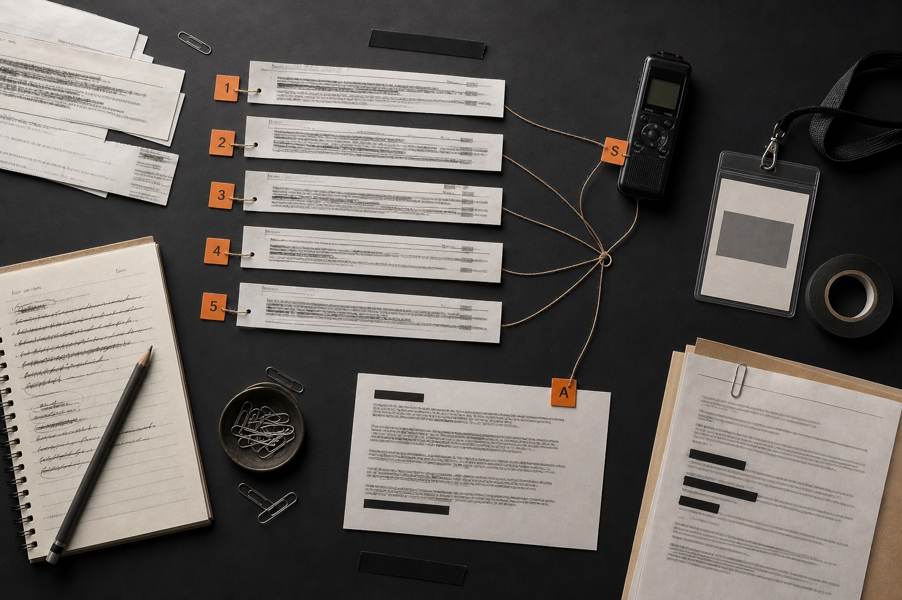
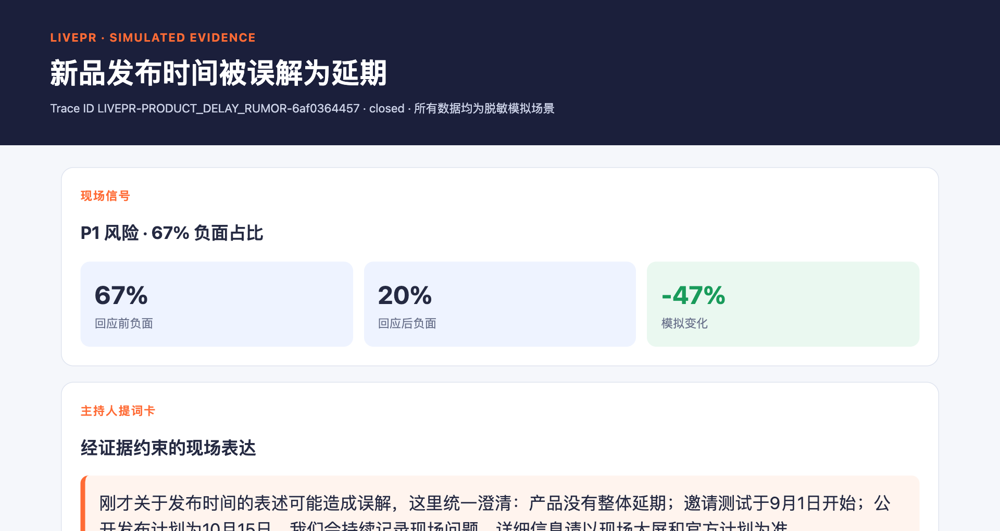

“真正缺的不是一张情绪看板，而是在几十秒内把未经许可的发言变成一段有证据、可审批、能执行的主持补救台词。”
01 / ORIGIN
项目起源于一次来不及处理的现场意外
一次活动中，有位嘉宾临时说出未经许可的内容。现场团队需要同时判断：这句话是否超出授权、线上是否已经扩散、事实依据在哪里、主持人此刻应该澄清、安抚还是转场。传统工作方式依赖人工盯群、临时核对资料和多人串联确认，补救窗口很容易在沟通中消失。
LivePR 面向活动主办方、品牌公关、主持人和直播运营团队，把实时转写、评论、问卷、工作人员记录与授权资料组织成一个共享事件。AgentTeams Team Leader 将它拆给不同角色处理，只有通过事实核查与人工审批的版本，才能进入主持控制台。
02 / THE MOMENT
一段临时发言，现场只有几十秒的补救窗口
系统把“现场出事了”拆成可验证的小问题。每一步都有输入、输出、责任人和失败去向；没有证据就不继续，没有批准就不交付。
嘉宾偏离授权内容
实时转写与线上反馈在同一事件中锁定高风险片段。
核查授权与事实证据
对照授权清单、嘉宾资料与主持预案；缺证据时明确 abstain。
主持人拿到可执行补救台词
澄清、安抚或转场策略经具名批准后，生成短台词与禁用表达。
03 / SYSTEM
从“看见舆情”升级为“完成决策”
LivePR 不以情绪分数作为终点。它维护一个持续演进的 EventContext，让转写片段、授权状态、证据 ID、风险等级、台词版本和审批状态沿着同一条链路传递。
实时转写 · 弹幕评论 · 问卷 · 工作人员记录 · 授权事实库
主持补救台词 · 实时风险大屏 · evidenceIds · 决策日志 · 复盘报告
证据优先于流畅表达；人工审批优先于自动发布；可回滚优先于一次性生成。
04 / AGENT TEAM
每个 Agent 只处理自己有权处理的问题
专职分工让系统可以被检查、替换与复用。角色之间不共享模糊的长对话，而是通过结构化事件字段、证据仓和决策日志协作。
- 01Collection Agent现场信号归一化
- 02Trend Agent风险片段与趋势突变
- 03Fact Check Agent授权与事实证据
- 04Strategy Agent风险分级与响应策略
- 05Host Card Agent短主持台词与禁用表达
- 06Safety Agent审批门与越权检查
- 07Postmortem Agent反馈验证与事件复盘
05 / SKILLS
核心能力被封装成可测试的 Skill 契约
Skill 不是一段一次性提示词。每个 Skill 都显式定义输入、输出、依赖、失败行为、权限边界和复用场景，能够独立版本化与评测。
SKILL / 01
trend-burst-detect
- 输入
- EventContext + 归一化转写 / 评论
- 输出
- 风险片段、时间码、样本 ID、置信度
- 依赖
- Event Gateway + 历史基线
- 失败
- 数据不足或断流 → abstain / 回到 VERIFY
- 复用
- 直播、论坛、课程、企业会议
SKILL / 05
host-card
- 输入
- 已核事实 + 已批准策略 + 风险等级
- 输出
- 短台词、禁用表达、evidenceIds、版本号
- 依赖
- fact-check + response-plan + 人工审批
- 失败
- 无证据或未审批 → 不生成可交付版本
- 复用
- 主持、客服、应急沟通、直播运营
06 / SAFETY
结果可验证、动作可审批、版本可回滚
Event Gateway 把不同来源转换为统一事件 Schema；MCP/HTTP 适配器负责超时、重试、幂等与权限边界；RAG 只检索活动授权清单、嘉宾资料与主持预案，并返回证据 ID。

- 验证：证据覆盖、授权状态、禁用表达和版本一致性必须同时通过。
- 审批：高风险响应由主持人或公关负责人具名确认。
- 降级：ASR 低置信度转人工记录；RAG 无证据时明确 abstain。
- 回滚：保留上一已批准版本，新台词可撤回且动作写入决策日志。
- 审计：Trace ID、输入输出、证据来源、耗时、置信度、修改与交付全量留痕。
07 / EVIDENCE
当前 MVP 已经能运行，也能证明自己为什么停止
确定性 MVP 不依赖外部模型或 API Key。它复现完整状态机：未批准时停在 awaiting_approval；具名批准后进入 closed，并生成结果、Trace、主持卡、报告和自包含 HTML 大屏。

cd workspace/livepr-mvp
python3 -m unittest discover -s tests -v
python3 run_demo.py \
--scenario product_delay_rumor \
--approve \
--approved-by demo-reviewer08 / RELATED WORK
八个真实项目，构成场景抽象与内容表达的底座
团队积累覆盖地图平台、赛事互动、文旅内容、教育培训、企业展示、技术视频和 AIGC 学习工具。以下信息来自项目应用场景信息表。
- 01OPC/FDE 个人能力地图与成果评价平台场景机会
所在地与服务范围地图 · 能力画像 · FDE 成果证据与评分
- 02AI 旅拍内容优选与旅行纪念册制作场景机会
自动选片 · 人物与光线修复 · 视觉 Skill · 高清印刷输出
- 03WorkBuddy 功能演示与新手训练平台教育培训
高保真交互 · 模拟任务流 · 新手 / 教师双指南
- 04化工流程可视化项目先进制造
文档 → 脚本 / 分镜 → Image 关键帧 → HyperFrames 镜头
- 05企展中枢企业展示
多源解析 · OCR / 修图 · HTML / PPT 模板化 · 质量闸门
- 06湖南省农耕文化地图文化科技
128 处点位 · 3 条线路 · 24 件文物 · 24 个节气
- 07湘超数字地图重大活动
球队与城市联动 · 赛程战报 · 榜单 · 投票与线上打气
- 08Prompt CanvasAIGC 工具
结构化提示词 · 时间码 · 视频同步高亮 · 差异检测
09 / TEAM & NEXT
现场策略、AIGC 视频与视觉内容组成完整表达闭环
扶瑀琪
项目负责人 · 产品与现场策略
地理信息测绘 / 湘超数字地图设计欧阳劲汝
AIGC 视频制作
视频创意、AI 素材与动态影像张佳佳
视觉内容负责人 · AIGC 内容主创
视觉方案、分镜、剪辑与动态特效接下来，把确定性 MVP 变成真实 AgentTeams Demo
接入实时音频 / 字幕与授权资料 RAG
替换为 AgentTeams Worker，评测延迟、成本与稳定性
完成 30 秒应急演练、2–3 分钟演示视频与授权活动试点
LivePR 不替主持人做决定。它把复杂现场压缩成一份可核、可批、可说出口的选择。
查看项目代码 ↗